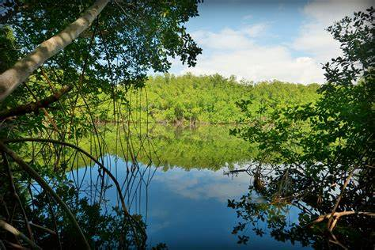

Humedales
¿Que es un Humedal?
Según la CONAF (Corporación Nacional Forestal), los humedales son zonas en las que el agua es el principal factor que controla el medio y la vida vegetal y animal relacionada con él; son lugares que están húmedos de forma permanente o temporal, y pueden ser naturales o construidos por el ser humano. Por tanto, son humedales los lagos, ríos, pantanos, turberas, salinas, playas de arena, embalses, canales de regadío y muchos otros.
¿Por qué los humedales son importantes?
Según la Fundación Aquae, los humedales son indispensables para el ser humano y la biodiversidad, dado que ofrecen suministro de agua dulce y alimentos, recarga de aguas subterráneas, contribuyen a mitigar los efectos del cambio climático (actuando como barrera protectora frente a inundaciones, sequías y otros desastres naturales) y son capaces de almacenar más carbono que cualquier otro ecosistema.
Tipos de humedales
Humedales costeros, inclusive lagunas costeras, costas rocosas, pastos marinos y arrecifes de coral.
Incluidos deltas, marismas de mareas y manglares.
Humedales asociados a lagos.
Humedales adyacentes a ríos y arroyos.

Pantanosos marismas, pantanos y ciénagas.
Estanques de cría de peces y camarones, estanques de granjas, tierras agrícolas de regadío, depresiones inundadas salinas, embalses, estanques de grava, piletas de aguas residuales y canales.